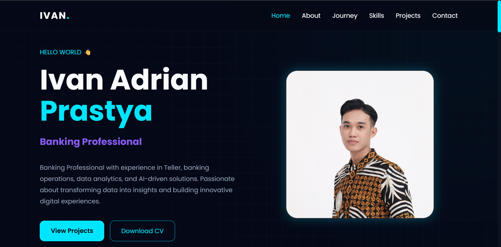

WEB DEVELOPMENT CASE STUDY
🌐 Personal Portfolio Website
Website portfolio personal yang dirancang untuk menampilkan kemampuan data analytics, AI, dan digital solutions dalam satu pengalaman yang profesional dan responsif.
01. The Goal
Membuat website yang tidak hanya berfungsi sebagai CV online, tetapi juga sebagai tempat untuk menunjukkan project, case study, skill, dan jalur kontak untuk calon client.
02. Website Structure
🏠 Hero SectionMenjelaskan fokus utama dan value yang ditawarkan dalam beberapa detik pertama.
🧰 ServicesMenampilkan layanan Data Cleaning, Data Analysis, dan Data Visualization.
📂 Projects & Case StudiesSetiap project diarahkan ke halaman detail dengan screenshot dan penjelasan.
📱 Responsive LayoutLayout disusun agar tetap nyaman digunakan di desktop maupun perangkat mobile.
03. Website Preview

04. What This Project Shows
Project ini menunjukkan kemampuan membangun website statis yang berfokus pada personal branding, presentasi project, navigasi case study, responsive design, dan pengalaman pengguna.